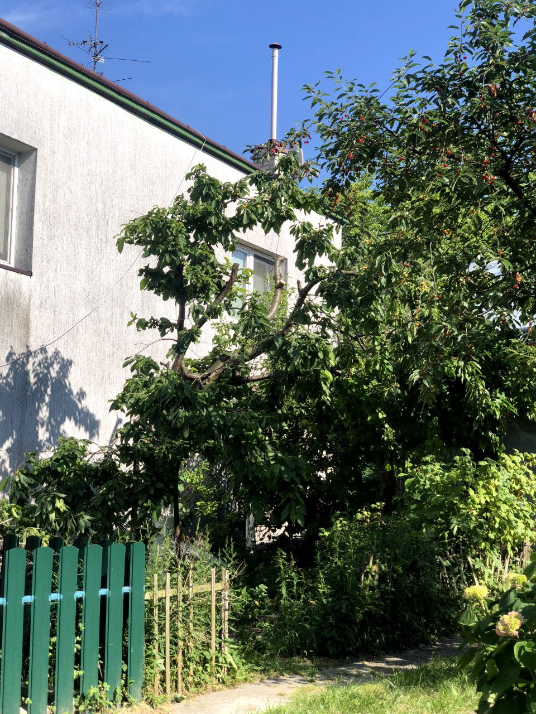
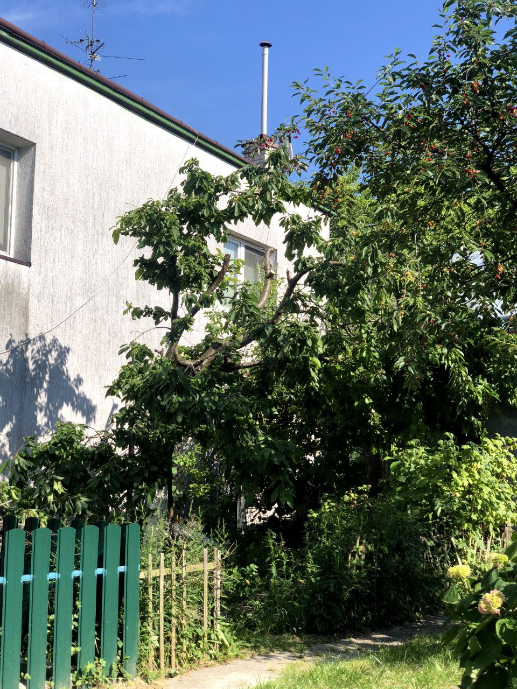
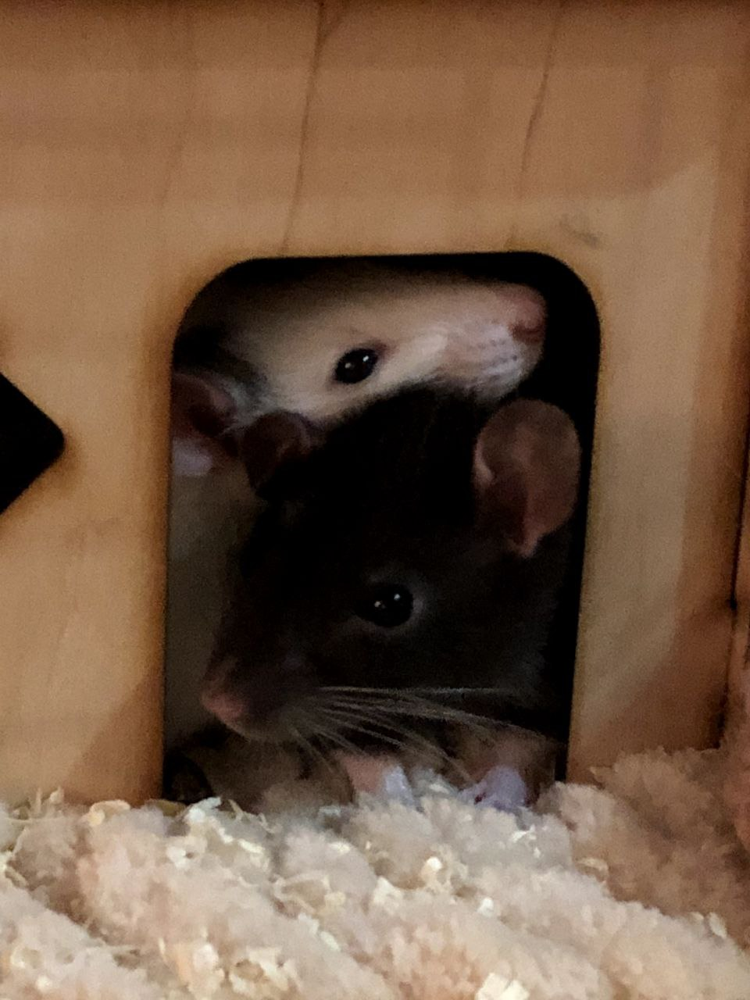

ты с Бонитткой


теперь с крысюками

смешной такой сякой


много едыыыыы


спишь)


наша первая поездка в Карпаты


еще смешнявый


делала тебе джем
 



красивая весна и лето


приезжали мои родители и мы поехали в Ровно

крыски и Боня

красивые цветочки для меня и переезд к тебе


делаешь вино

<3


фоточки


мега красивенький
та самая заветная ПОПА
Привет наверное я не буду писать с запятыми или точками у меня нету на это времени и думать сложно пофиг я не люблю думать о таком абсолютно
Щас у меня неочень состояние я так же ненавижу себя ну ничего нового мб я уже привыкла
Я помню когда увидела твою анкету впервые мне было не очень интересно думала зря теряю время но когда ты написал была приятно удивлена начать диалог шуткой было хорошей идеей с твоей стороны лично у меня небыло какого то большого дискомфорта если сравнивать с другими диалогами привет как дела тд хотя с другой стороны шутки для меня сложны если не локальные да и вообще у меня мозг не развит для них нафиг я что шут нет спс) я пыталась понравится как то поддержать диалог ибо ты мне действительно начал импонировать сразу шутки про мать были лишние и токсичные шутки отвратные я не знала как вести себя с новым человеком просто в народе токсик шутки все лучше воспринимают извини
Меня сразу насторожило твое спокойной ночи так как раньше такого не видела никогда ну ладно может хотел уже уйти и по этому так написал логично но вот доброе утро это вообще ппц спасибо что приучил(?) к такому мне нравится это мб потому что как только я просыпаюсь я думаю о том чтобы написать тебе и как засыпаю вообще эти 15-20 минут перед сном одни из лучших я вспоминаю то как гуляли вместе проводили время как спали у меня это было ужасно неудобно ноооо круто да хороший опыт спасибо что поддержал тогда идею пойти гулять утром я в тот вечер не ждала абсолютно что ты ко мне придешь я думала это рофл….. бат нормик так палучилось конечно смешняво
Мне больно потому что ты пишешь как хочешь нормально жить спать существовать а я никак не помогу наверное по чувствам это для меня похоже на то когда человек с неизлечимой смертельной болезнью плачет о том что хочет жить я неоднократно плакала от безысходности
Ты такой светлый человек и добрый и внимательный вообще красивый очень у тебя красивые светлые глаза только жаль что я действительно очень боюсь смотреть в них блин это так дискомфортно я ненавижу свою внешность это из-за этого блин ты очень умный можешь многое рассказать отстоять точку зрения свою дать аргументы вообще ты супер крутой если брать в общем
Я вообще не предполагала что так все получится как нафиг нереально ты делаешь мне дни лучше каждые просто своими сообщениями даже
Я очень привязалась люблю тебя как человека больше всего я не знаю что будет если почему то разойдемся я не знаю как это переживу ты 85%моей нынешней жизни и помогаешь мне много в чем ты самый важный человек в моей жизни спасибо большое
Я действительно боюсь тебе надоесть очень иногда когда ты может не в настроении а я к тебе лезу ты очень пассивно отвечаешь меня пугает это но ты еще говорил что большую часть времени спокоен и отвечаешь пассивненько я не знаю но если чо говори сразу что надоедает или напиши мне список что тебе не нравится во мне хз :( не хочу причинять тебе дискомфорт у тебя и так своего хватает
Ты очень сильный человек я вижу твои старания каждый день ты умничка все очень классно делаешь я готова тебя поддержать в любых начинаниях все должно получится солнышко должнооооо никак иначе буду с тобой до конца не хочу тебя отпускать
Я тебя очень сильно люблю Женя твои руки волосы лицо нос ноги попу тело шею все нравится абсолютно
Моя жизнь не может похвастаться идеальностью но моменты проведенные с тобой запомнятся мне точно до конца жизни спасибо за все котик ты мне даришь незабываемое время и я хочу его продлить до конца
03.06.2021 И до сих пор безумно люблю =)